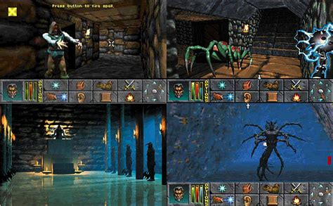

The Release of Daggerfall
The second installment in the Elder Scrolls series, it was released on September 20, 1996 for MS-DOS, following the success of 1994's The Elder Scrolls: Arena. Work on The Elder Scrolls II: Daggerfall began immediately after The Elder Scrolls: Arena's release in March 1994. Originally titled Mournhold and set in The Elder Scrolls III: Morrowind, the game was eventually relocated to the provinces of High Rock and Hammerfell, in Tamriel's northwest.
The Big Plot
Daggerfall is set in the Iliac Bay, between the provinces of High Rock and Hammerfell. The player is sent here at the Emperor's request. He wants the player to do two things: First, the player must free the ghost of King Lysandus from his earthly shackles; Second, the player must discover what happened to a letter from the Emperor to the former queen of Daggerfall. The letter reveals that Lysandus's mother, Nulfaga, knows the location of the Mantella, the key to resurrecting the first Numidium, a powerful brass golem created by the long-lost dwarves. Tiber Septim, the founder of the Empire, previously acquired the Numidium from the dark elves of Morrowind and used it to halt the aggressive expansion of a fascist elvish faction in the distant past. Seeking to return the Numidium to the Empires control, the emperor wants his spy to force Nulfaga into revealing the location of the Mantella so that the Blades can finish the reconstruction of the machine. Through a series of mishaps and confusions, the letter fell into the hands of an orc named Gortworg. Not knowing what the Mantella is, Gortworg consults Mannimarco, the King of Worms (the leader of the Necromancers). During this time, the Underking, who originally destroyed the first Numidium because of its misuse by Tiber Septim, is recuperating deep within a tomb of High Rock after expending so much energy destroying it the first time. For the player to give the Mantella to anyone, the player must kill King Lysandus's murderer and put his ghost to rest. After accomplishing this, the player must steal the totem of Tiber Septim from King Gothryd of Daggerfall and free the Mantella from its prison in Aetherius. Following this, the player has six choices regarding how to deal with the Mantella.
Daggerfall has several endings:
- If the player gives the Mantella to the Underking, he absorbs its power, passes into eternal rest, and creates a large "magicka-free" area around himself.
- If Gortworg is victorious, he uses the Numidium to destroy the Imperial forces and the "Bay Kings," the rulers of the several provinces of the Iliac Bay. The Underking arrives shortly thereafter to destroy the first Numidium, losing his life. Gortworg then succeeds in creating Orsinium, a kingdom of Orcs.
- If the Blades are victorious, they succeed in recreating the first Numidium and use it to defeat the Bay Kings and the Orcs, as well as unite all the provinces of Tamriel under the empire once again.
- If any of the Bay Kings win, that king will use the first Numidium to defeat all the other kings just before the Underking destroys him and itself.
- If Mannimarco receives the Mantella, he uses it to make himself a god.
- One more ending, as described in the strategy guide The Daggerfall Chronicles and elsewhere, was planned by Bethesda, but is not achievable in-game: if the player activates the Mantella while in possession of the totem (the controlling device of the Numidium), the Numidium will slay the player, go out of control, and be destroyed by Imperial forces.
Gameplay
Daggerfall, like the other games in The Elder Scrolls series, takes place on the fictional continent of Tamriel, in which the player can travel between the provinces of High Rock and Hammerfell. Like all The Elder Scrolls games, the player does not have to follow questlines or fill specific character roles, allowing the player to play the game how they see fit. The game features over 15,000 cities, towns, villages, and dungeons for the character to explore, which gives the player many options when buying a house. In addition to exploring the world the player can join a number of guilds, orders, and religions; all with unique quests and tasks for the player to do. Joining and contributing to these organizations will allow the player to gain ranks and gain a reputation in the game world, which affects how non-playable characters (NPCs) and other factions view the player. One special feature in Daggerfall is the ability for the player to create their own spells using the game's spell-creation system, which is unlocked by joining the Mages Guild; allowing the player to create custom spells with varying effects, the game will automatically generate the magicka cost of the spell based on the power of effects chosen. Similar to the spell-creation is the ability to enchant equipment. The player can craft or find a variety of equipment. Players also have the ability to become a vampire, werewolf, or wereboar. The combat system uses mouse movement to determine the direction and effect of the weapon swing in melee combat. Daggerfall features a wide range of enemies; the strongest being the Daedra, which can make the journey through these realms difficult. In order to finish the game the player must visit at least 6–8 of the 47 explorable areas present in the game.